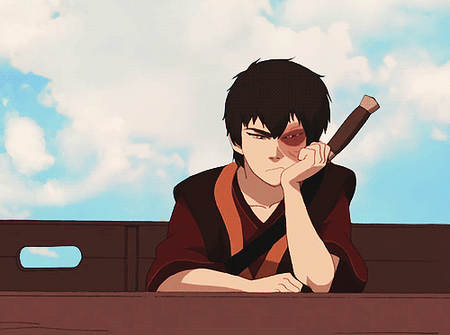
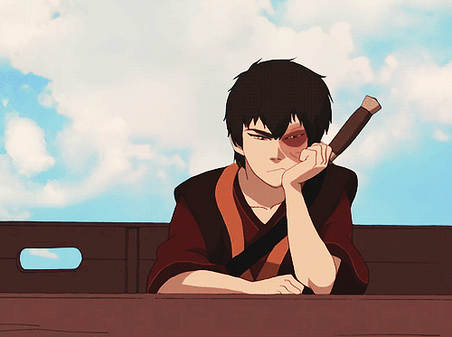

I am in my last semester as a senior here at AU. I have always liked technology and wanted to challenge myself with Computer Science.
I am particularly interested in Cybersecurity. While I do not really enjoy software development, I understand that it is crucial, especially in the field of Cybersecurity. I am currently working as a Junior Systems Administrator Intern at a nonprofit in Arlington, VA.
Although the role is not directly related to cybersecurity and does not require coding, it occasionally involves command-line and networking tasks. I am also pursuing multiple CompTIA certifications, which are as follows:
I finish my first contract with the Army Reserves this upcoming January. It has been a long 6 years filled with memories and learning.
but it is time to put the camo jacket up. I want to move into either GovTech or work in the private sector. Next steps are marriage and working a 9-5 and building a financial portfolio. I aspire to be a SOC analyst, Information Tech.
As a final project I would like to create my weddding planning website. Please let me know if this is acceptable!

I love gaming! I played a lot of rockstar games such as RDR2 AND GTA5 I can confidently say that I am one of the best gunslingers in RDR. GTA I was prety good in my day. Also fun fact the gaming environment is what made me love cybersecurity. I was always getting DDOS'ed and having my IP pulled and wannabe hackers trying to scare me. This prompted me learn about VPNS, OVHS, IP SNIFFING TOOLS. But mainly cybersecurity in general. It also introduced me to social engineering.